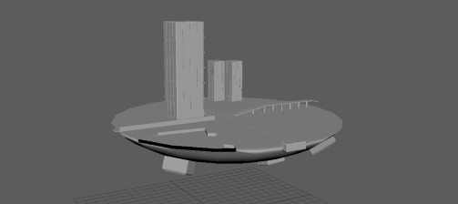
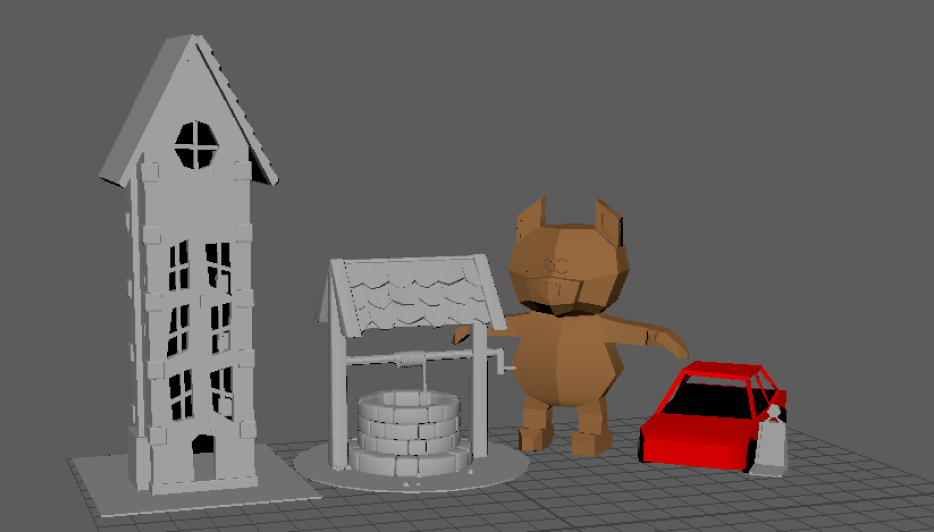
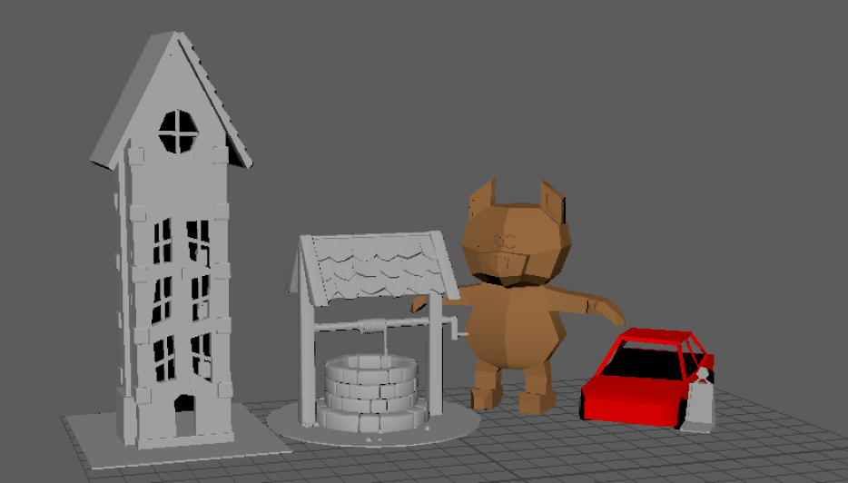
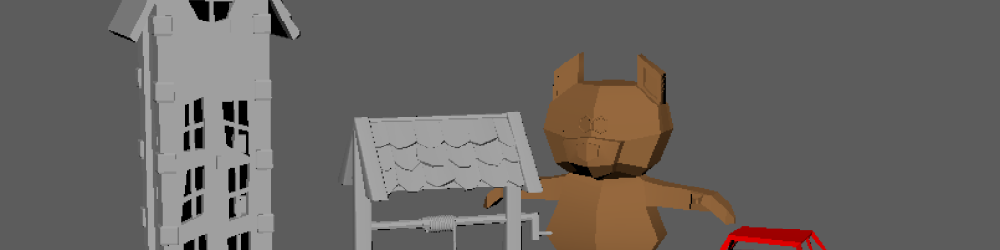
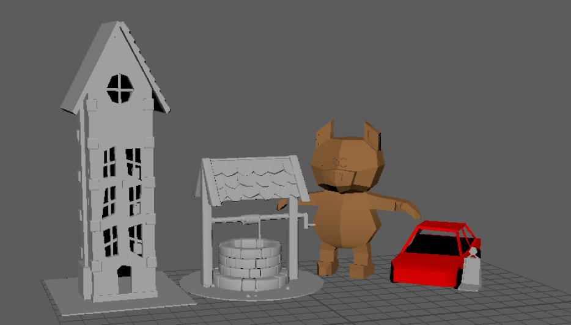

 

3D Work est un rassemblement de mes différents
créations 3D fait a l’aide du logiciel Maya dans le cadre
du cours de création numérique. 5 créations 3D y sont
présenter tout d’abord un immeuble à la suite de cela il y
a un puits, un ours, une voiture et pour finir une île volante
inspirer d’un montage photo : Space City Series N°1 : Astro
World de l’artiste Chris JLN.

3D Work
